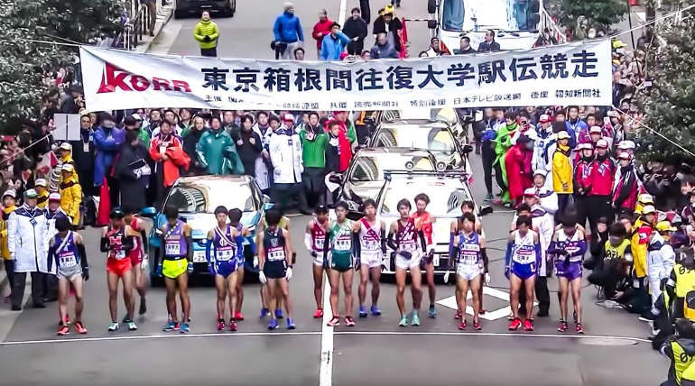
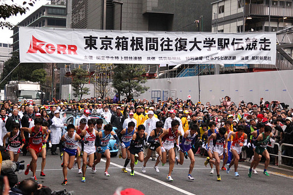

The annual Tokyo Marathon welcomes over 35,000 runners. One of the six World Marathon Majors, participants run a route that takes them whirring past the Tokyo Imperial Palace, around the Tokyo Big Sight, and towards the finish line that awaits in the distance.
Whether visiting as a spectator or a runner, fanfare around the event is high, with onlookers in the thousands cheering on racers as they take on 26 miles of open road in under seven hours.
Right after the regular Olympic games are over, it is the turn for the paralympic athletes to shine on the biggest stage. During the 2020 Paralympic Games, 22 sports and 540 events will be contested featuring around 4,400 athletes which is an all-time high.
NOTICE: Due to the international spread of the coronavirus, the Tokyo Paralympic Games 2020 was postponed until the summer of 2021.
The "Hakone Ekiden" is a relay race in which a sash is relayed over 10 sections of the approximately 217km round trip between Otemachi, Tokyo and Lake Ashino, Hakone. Competing in the tournament are a total of 21 universities from the Kanto region, including be the top 10 teams from the previous year, the top 10 teams from the qualifying round, and the top team from the Kanto Student Union qualifiers.
The first leg of the race between Otemachi and Lake Ashino is held on January 2 and the return leg on January 3, with large crowds gathering along the route to support the runners. The race has also become a New Year's tradition.
The 2020 Summer Olympics, officially the Games of the XXXII Olympiad is an upcoming international multi-sport event scheduled to be held from 23 July to 8 August 2021 in Tokyo, Japan. Formerly scheduled to take place from 24 July to 9 August 2020, the event was postponed in March 2020 as a result of the COVID-19 pandemic, and will not allow international spectators. Despite being rescheduled for 2021, the event retains the Tokyo 2020 name for marketing and branding purposesThis is the first time that the Olympic Games have been postponed and rescheduled, rather than cancelled.